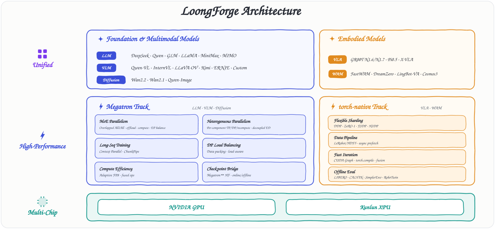
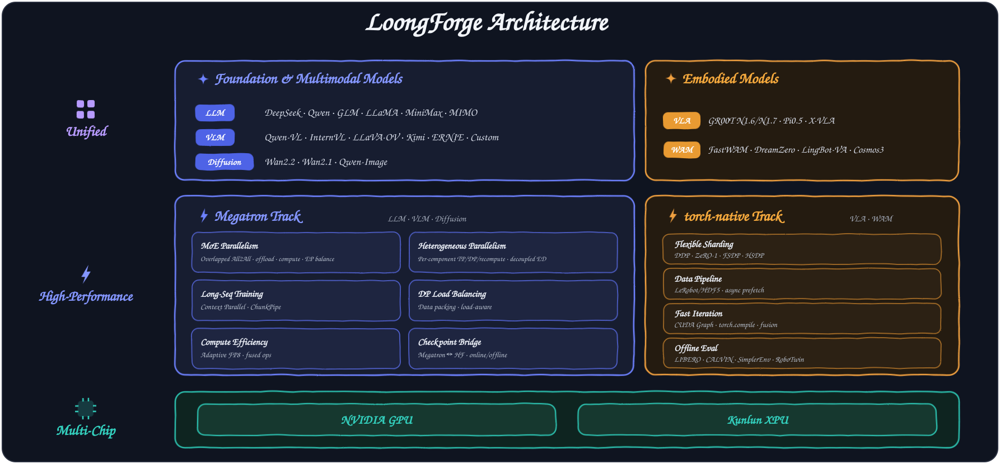

A unified, high-performance framework for training LLMs, VLMs, diffusion, and embodied models — multi-backend, with native NVIDIA GPU & Kunlun XPU support
A quick tour of what sets LoongForge apart
One unified stack — from model composition down to GPU / XPU silicon.


Training throughput speedup over mainstream open-source baselines — each model benchmarked on the same machine type with the same training hyperparameters
DeepSeek-V3.2 Lite reflects DSA operator-level optimizations and was validated on a reduced-layer configuration due to test-bed scale limits.
Numbers were measured at a point in time and may evolve as implementations change on both sides.
One codebase, two silicon stacks — production-ready on NVIDIA GPU and Baidu Kunlun XPU
Built on the community Megatron + TransformerEngine ecosystem, with LoongForge optimizations layered on top.
XPU Plugin mechanism shields the upper stack from adaptation differences, while integrating an XPU-specific optimization toolchain.
From compact SLMs to large-scale MoE giants — all batteries-included
Compose any ViT + any LLM backbone via a YAML file. Example →
From install to launch — jump straight to the tutorial for your model type
Recommended: one Docker image bundles the CUDA/XPU toolchains, patched Megatron, and TransformerEngine — so every node trains from the same environment. Source build is also supported.
$ git clone --recurse-submodules \ https://github.com/baidu-baige/LoongForge.git $ docker build --build-arg COMPILE_ENV=hopper --build-arg ENABLE_LEROBOT=false \ -t loongforge:latest \ -f ./LoongForge/docker/Dockerfile .
$ docker build --build-arg ENABLE_LEROBOT=false \ --build-arg BASE_IMAGE=loongforge/loongforge_kunlun:py310_torch25 \ -t loongforge-kunlun:latest \ -f LoongForge/docker/Dockerfile.xpu .
Choose your model type — each card opens a runnable, step-by-step tutorial.
Browse ready-to-run configs and example scripts to launch your first run.
Open-source models trained with LoongForge or its predecessor AIAK-Training-LLM
Next-generation fully open multimodal model — improved data, training recipe, and scaling.
Scientific multimodal large language model for advanced reasoning.
Fully open framework for democratized multimodal training.
Domain-enhanced universal vision-language models.
Built in the open — join discussions, report issues, and contribute
File bug reports and feature requests.
Ask questions and share experiences.
Read the guide and send your first PR.
LoongForge is built in the open by these developers — your name could be next.
🛠️ Become a contributor